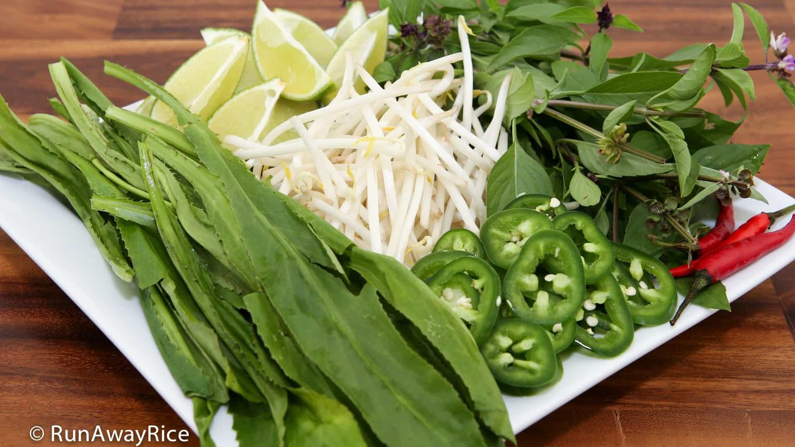
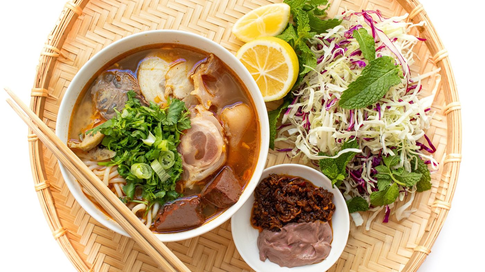
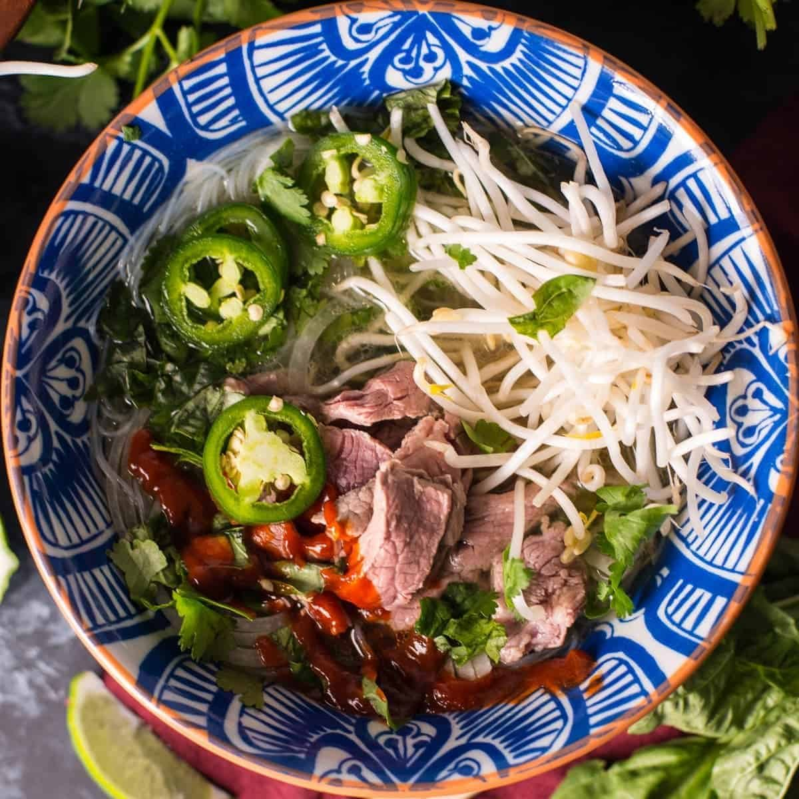
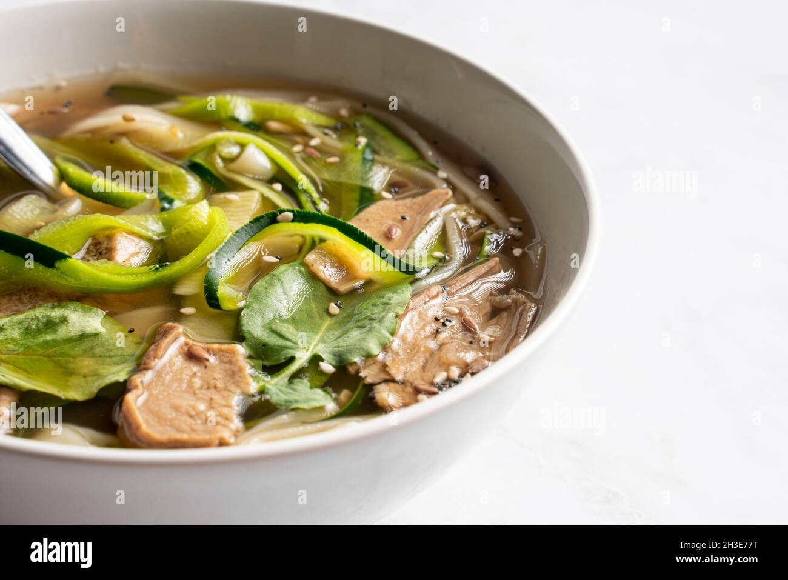
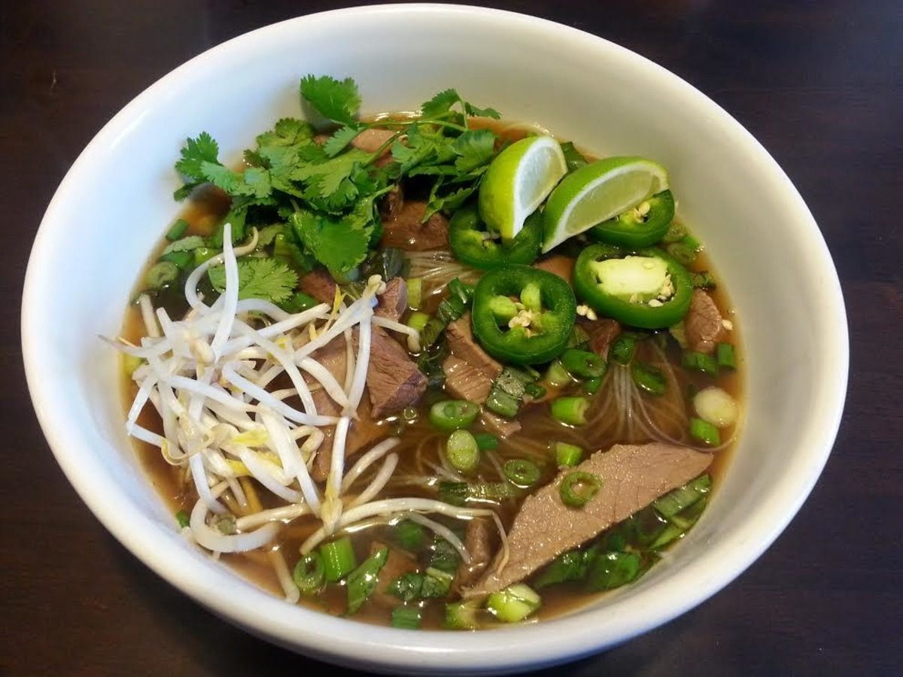
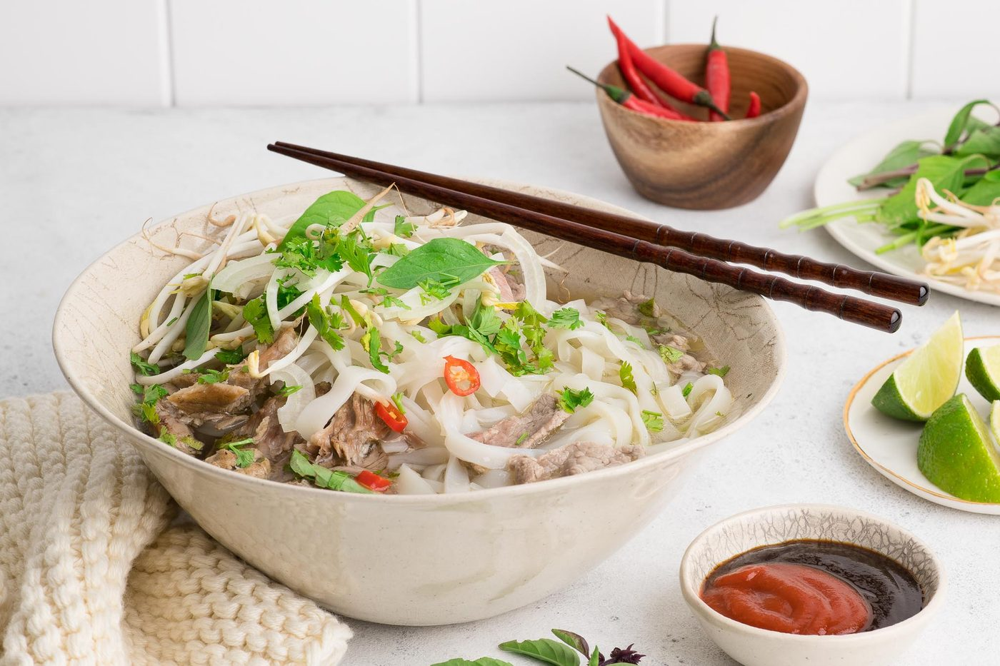
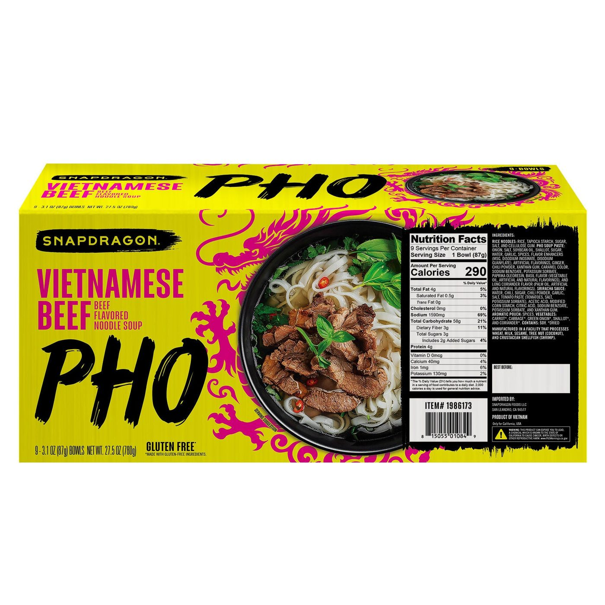

← Asian Kitchen
Pho Bo
Hanoi's dawn soup: a beef broth so clear and fragrant you could read a newspaper through it.
Hanoi's dawn soup: a beef broth so clear and fragrant you could read a newspaper through it.
Pho is a broth with a noodle habit. Everything else — the rice noodles, the rare beef, the mountain of herbs — is a garnish on the real work: beef bones charred with ginger and onion, simmered for hours with star anise, cinnamon and clove until the kitchen smells like a Hanoi street at 6 a.m.
Clarity is the pride of a northern pho bo. Parboil the bones and rinse them — this single step removes the impurities that would cloud everything. Then the gentlest simmer, skimming, and never a boil. The finished broth should be amber, translucent, and so layered with spice that guests will demand to know your secret. The secret is four hours and a strainer.
serves 6 — tick items off as you shop; it saves as you go
Cover bones with water, boil hard 5 minutes — a gray scum rises. Dump everything, rinse bones under running water, scrub the pot. This unglamorous step is the entire secret of a clear broth.
Broil onion and ginger until blackened and soft, 15 minutes. Toast the dry spices in a pan until fragrant, then tie loosely in cheesecloth — a spice bag you can fish out.
Bones, brisket, charred aromatics, spice bag, 4 L water. Bring to a bare simmer and hold there — one bubble every couple of seconds — for 4 hours, skimming occasionally. Remove brisket at the 2.5-hour mark so it stays tender.
Strain the broth. Season with fish sauce and rock sugar — taste: it should be slightly over-seasoned, because noodles and herbs will dilute it in the bowl.
Soak/cook noodles, divide into bowls. Lay raw sirloin slices on the noodles, then pour the boiling broth over — the thin slices cook in the bowl. Add brisket slices. Guests top their own with herbs, sprouts, lime and chili.
Do not stir the whole bowl into confusion — locals lift noodles, dip into the broth, sip broth between. The plate of herbs is part of the meal, not a garnish. Broth first, noodles second, everything third.







Images are web-sourced via image search and self-hosted. Original sources:
https://z-cdn.chatglm.cn/image-search-mcp/images-ppt/07a1c0964398.jpghttps://z-cdn.chatglm.cn/image-search-mcp/images-ppt/1ba484ca0f24.jpghttps://z-cdn.chatglm.cn/image-search-mcp/images-ppt/1df3e1a220a2.jpghttps://z-cdn.chatglm.cn/image-search-mcp/images-ppt/59537e31ae7a.jpghttps://z-cdn.chatglm.cn/image-search-mcp/images-ppt/67c0abd3621f.jpghttps://z-cdn.chatglm.cn/image-search-mcp/images-ppt/bc9603028396.jpghttps://z-cdn.chatglm.cn/image-search-mcp/images-ppt/ec680b7280bb.jpgVerified working videos — click a card to load the embed.


Powered by GitHub Issues — the backup kitchen. One issue per recipe; your comment lands in the repo.